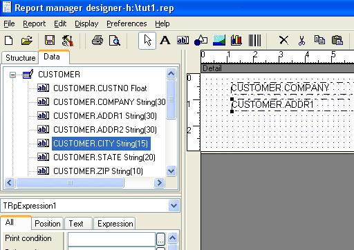
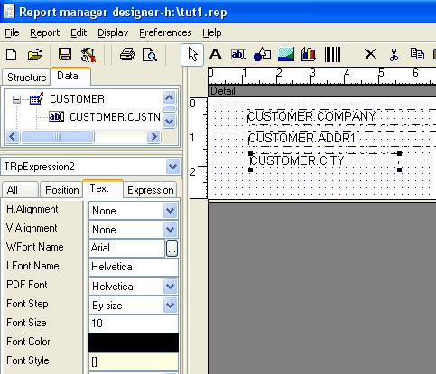
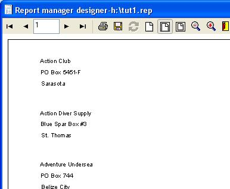

After testing datasets and connections you can drop easily fields to report sections.
Click expression button and a list of available fields appear, select one and click the section surface.

You can click the component and see the properties.

Before experimenting with properties, preview the report, click preview button and navigate through pages.

Close the window and drop some labels, alter the text property of them and drop adress and city fields to obatin this designt:
We wil add a rectangle, drop a rectangle, clic in it, clic To Back Button and position and size it like this figure:
To adjust detail size click the detail item in the design tree or the surface of the Detail section, then alter Height property to 2 (cms).
The preview should show something like this:
In the preview window you can click save button to export the result to Report Metafile or Adobe PDF format: